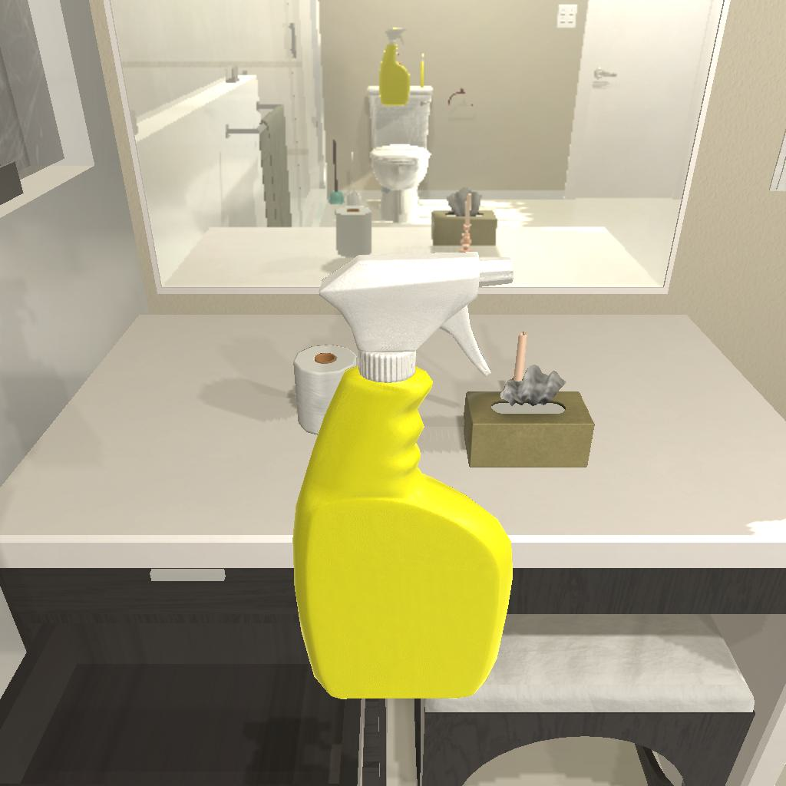
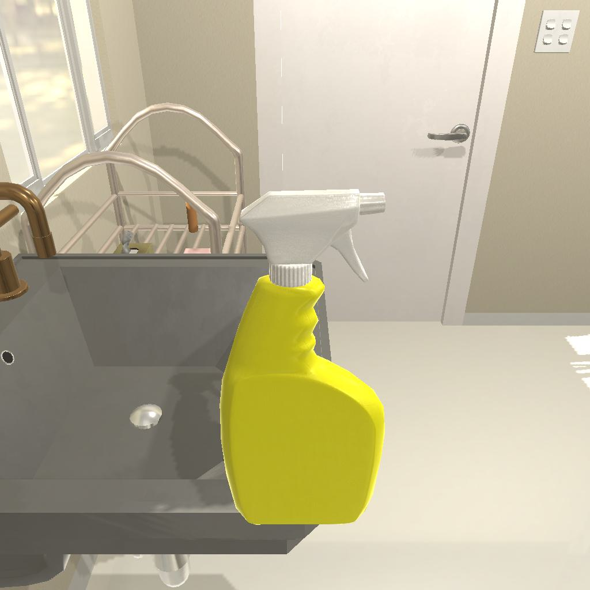

---------------------------------------------------------task: 28---------------------------------------------------------
--------------------------------------------------------------------------------------------------------------------------------------------------------------------
--------------------------------------------------------------------------------------------------------------------------------------------------------------------
Step:--------------------------------------------------------------------------18-------------------------------------------------------------------------------
----------------------------------------
VLM Prompt:
Image1:
Image2:
Image3:
**Instruction**
1. Analyze the provided images to identify all visible household objects and compare the difference between images (e.h. whether the object is opened or not and taken on hand or not), focusing on those relevant to the task description "put two spraybottle in toilet."
2. Use the analysis of images and the task hint "The agent must find an object of the desired type, pick it up, find the correct location to place it, put it down there, then look for another object of the desired type, pick it up, return to previous location, and put it down there with the other object." to answer the question: what is the most reasonable action in the choices for the task description "put two spraybottle in toilet"?
3. Decide and write the answer using the template: The answer is: (i): , where i is the real number. If there is no desired object in images, search every place based on **Initial Observation** to find the object. And if no one is exactly correct, choose a similar answer.
**Initial Observation**
You are in the middle of a room. Looking quickly around you, you can see bathtub (1), bathtubbasin (1), cart (1), sink (1), garbagecan (1), sinkbasin (1), countertop (1), drawer (1-4), toilet (1), toiletpaperhanger (1)
**Answer Choices**
(1): go to bathtub 1
(2): go to bathtubbasin 1
(3): go to cart 1
(4): go to garbagecan 1
(5): go to sinkbasin 1
(6): go to drawer 1
(7): go to drawer 2
(8): go to drawer 3
(9): go to drawer 4
(10): go to toiletpaperhanger 1
(11): put spraybottle 2 in/on sink 1
(12): clean spraybottle 2 with bathtub 1
(13): clean spraybottle 2 with bathtubbasin 1
(14): clean spraybottle 2 with sink 1
(15): clean spraybottle 2 with sinkbasin 1
(16): examine spraybottle 2
(17): examine sink 1
**Answer**
Let's think step by step by following the instructions.
----------------------------------------
----------------------------------------
Original Response:
First, we analyze the images:
- Image1 shows a spray bottle on a surface next to a window with blinds. The spray bottle appears to be closed.
- Image2 shows a spray bottle on a countertop with various other objects, including a candle and a roll of toilet paper. The spray bottle is being held, suggesting it has been picked up.
- Image3 shows a spray bottle on a countertop in front of a kitchen sink. The spray bottle is also being held.
From the initial observation, we know we are in a room with a toilet, and the task is to put two spray bottles in the toilet. We can see from the images that there is one spray bottle being held in images 2 and 3, which means the agent has already picked up one spray bottle.
Given the task description and the hint provided, the most reasonable action would be to find the second spray bottle to complete the task. Since no other spray bottles are visible in the images, the agent must search the room. The answer choices do not include an option to pick up a second spray bottle, so the agent must continue searching the room based on the initial observation.
Since the agent is already holding one spray bottle, the next step is to find the second one. The answer choices do not include directly finding another spray bottle, so the agent needs to go to locations where the second spray bottle might be located. The most likely places where one might find a spray bottle would be in a drawer or on a cart where cleaning supplies are usually kept.
The answer is: (3): go to cart 1. This is the most reasonable action as the cart may contain the second spray bottle needed to complete the task.
----------------------------------------
----------------------------------------
>>> Refine Original VLM Response and Get Pure Action: go to cart 1
----------------------------------------
-----------------------------------------------------------------
Running time: 21.410669565200806 seconds
Total Money: 18.112219999999983
-----------------------------------------------------------------
-----------------------------------------------------------------
Text Observation:You arrive at loc 2. On the cart 1, you see a tissuebox 2, a tissuebox 3, a faucet 1, a toiletpaper 2, a soapbottle 2, and a spraybottle 3.
-----------------------------------------------------------------
UNSUCCEED